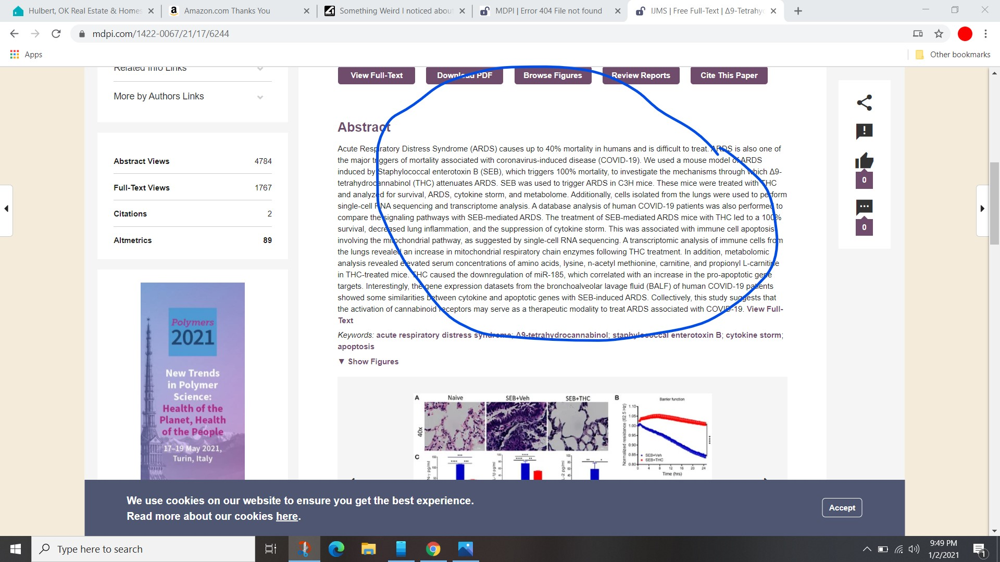

Something Weird I noticed about Covid Prevention
Since Covid first took the world over there was something that was said over a million times.Washing hands is one of the most effective means of not catching and spreading the virus.
Sooooooo... Isn't it weird that nobody has installed more sinks or handwashing stations?Sure we've got sanitizer up the yin yang but some wonder if it is safe or even effective.Hand washing is effective and has been proven with study after study to stop the spread of Covid other diseases.
Illinois has (or had not sure) a restaurant called Bob Chins.They served Crab and seafood and very greasy but delicious garlic rolls.In the middle of the restaurant they had hand washing stations.It was a brilliant thing.This was well before Covid.
Why haven't we seen more of these?!!!Shouldn't every grocery store have one right by the produce or even before you enter, what about at schools, or Hardware stores or other places that are 'essential'.Sure they have bathrooms, but how many people go in those?Some people don't want to go in bathrooms right now.They should have the portable sinks right out in front, just like you see at concerts and other venues.Are we going to see some health concerns in the future from all this sanitizer use?
I've only seen ONE portable hand washing station since Covid started and that was at an outdoor venue that was so huge it was almost impossible to not socially distance....Just thought it was weird.
Posted On: 2021-01-02T00:00:00
Posted By: JAGStorm
Because the narrative changed and COVID is now an airborne threat...not a surface one.
www.nytimes.com...
So washing hands is really pointless.They claim to be worried about you inhaling it and becoming infected...not transferring it via touch.
Posted On: 2021-01-02T00:00:00
Posted By: CIAGypsy
a reply to: CIAGypsy
So washing hands is really pointless.They claim to be worried about you inhaling it and becoming infected...not transferring it via touch.
Not necessarily, last I heard they said you can still get it from touching your eyes, nose or mouth with your hands.Even your article points that out:
Hand washing with soap and water for 20 seconds — or sanitizer in the absence of soap — is still encouraged to stop the virus’s spread.But scrubbing surfaces does little to mitigate the virus threat indoors, experts say, and health officials are being urged to focus instead on improving ventilation and filtration of indoor air.
They are saying maybe we don't need to bleach down the world but our hands are still a vector.
Posted On: 2021-01-02T00:00:00
Posted By: JAGStorm
Let me clarify....Handwashing is ALWAYS good for general hygiene.It is my personal opinion that people don't wash their hands enough....even pre-COVID.But my point is that increasing hand-washing is not effective in stopping the spread of COVID.
Posted On: 2021-01-02T00:00:00
Posted By: CIAGypsy
Everything depends on who is dictating the political narrative for any given day and/or week 👁️👹👁️
Posted On: 2021-01-02T00:00:00
Posted By: xuenchen
a reply to: JAGStorm
Washing hands is one of the most effective means of not catching and spreading the virus.
I wash the little guy as well because Covid.
Posted On: 2021-01-02T00:00:00
Posted By: carsforkids
Because water usage would skyrocket, and that’s not green.Not to mention the amount of soaps and paper products going into the treatment plants.Hand sanitizer is good enough.Is my guess.
Posted On: 2021-01-02T00:00:00
Posted By: 38181
Here is a great idea.If you don't want to risk being infected with COVID, lock yourself in your house with your mask and leave the rest of us the F alone to do what we feel we need to do to protect ourselves.
Posted On: 2021-01-02T00:00:00
Posted By: panoz77
originally posted by: carsforkids a reply to: JAGStorm I wash the little guy as well because Covid.
'because covid' Hahaha
Posted On: 2021-01-02T00:00:00
Posted By: kangawoo
originally posted by: 38181 Because water usage would skyrocket, and that’s not green.Not to mention the amount of soaps and paper products going into the treatment plants.Hand sanitizer is good enough.Is my guess.
The amount of disposable masks and gloves and sanitizer can't be green either.
Water can be recycled, and so can paper products.Yes it does take energy though.
Posted On: 2021-01-02T00:00:00
Posted By: JAGStorm
a reply to: JAGStorm
Where are all the hazmat buckets; if the Koof is so toxic?
Why would I go to a Dr to tell me whether im sick or not by pulling my DNA out of my medulla Amblue-GOTTA, with a pixie, stick and mailed off to .......???
Witches and SAR wear masks, stand 6 ft apart.....
Posted On: 2021-01-02T00:00:00
Posted By: ReadLeader
a reply to: JAGStorm
Because every Covid measure has been a half assed measure that doesn't really do much to stop the spread of disease but certainly makes idiots feel safe or self-righteous or both.The same could be said as to why there's no mask disposal biohazard bins and why nobody says jack # about the need for disposable gloves between say customers at stores or why it's suddenly acceptable for a mask to be used 8 hours a day or more, stored in unsterile conditions and then be considered safe or effective.
I've said it a bunch of times, if you're doing less than a hospital, you're not doing anything worthwhile and even hospitals can't stop disease transmission.
It's not like horseshoes, there's no almost sorta kinda good enough bull#.You're dealing with situations where a single drop contains hundreds of thousands to a million viral cells.
Either treat it like the hazard it is or just stop the charade.Either it's worth treating.like a significant biohazard or all this is pointless nonsense.It can't be both and considering the inconsistencies and inefficacies of the measures, i'm leaning towards nonsense bull# myself and by leaning I mean I fell of the #ing cliff and i'm splattered down in the nonsense # heap.
edit on 2/1/2021 by dug88 because: (no reason given)
Posted On: 2021-01-02T00:00:00
Posted By: dug88
a reply to: ReadLeader That's interesting and I would like to read more about it.So, I went to www.mdpi.com... and it says file not found.Do you have link that would work perhaps?I could make an image like that saying whatever I want
Posted On: 2021-01-02T00:00:00
Posted By: tamusan
I found that shutting the world down because of a cold and using it to gain complete control of society and it's movements was weird....
Handwashing?Really?
WTF up...
edit on 1/2/2021 by MykeNukem because: eh?
Posted On: 2021-01-02T00:00:00
Posted By: MykeNukem
a reply to: JAGStorm
It all really makes you wonder.The produce is out in the open for everyone to feel and man handle.For example- with the avocado you need check the color beneath the stem break off point and give a slight squeeze to ascertain the ripeness- all requiring human contact.
At the end of the day when I am sitting back and pondering the efficiency of all the sanitizing, I think trying not to touch your face while shopping, hand sanitizer in the car followed by washing your hands when you get home is a good idea.
However, I do ask myself why after almost a year of a mask mandate why we don’t have a standard recommended efficient mask readily available for purchase instead of the thin cloth fabric that most people are wearing.It seems disingenuous for our government to say wear a mask and then not make effective masks available after this long of a time.
As a side note: I am an ex RN and have always loved the topic of infection control.I am less afraid now: my sister in law is PA and has gotten the Rona- she has recovered, she lost smell and taste and had 1 really bad day.She is in her 30’s.
My niece, in her 20’s, who is a elementary school teacher got it and is doing well, but her sense of smell and taste has not returned yet and it has been a few weeks.
My Mom’s first cousin in his 70’s did die from the rona- I am unsure of his underlying conditions- didn’t want to ask at the risk of seeming insensitive.
edit on 2-1-2021 by Onlyyouknow because: (no reason given)
Posted On: 2021-01-02T00:00:00
Posted By: Onlyyouknow
originally posted by: panoz77 Here is a great idea.If you don't want to risk being infected with COVID, lock yourself in your house with your mask and leave the rest of us the F alone to do what we feel we need to do to protect ourselves.
Yes.⬆️⬆️⬆️⬆️⬆️⬆️⬆️⬆️⬆️
Posted On: 2021-01-02T00:00:00
Posted By: KansasGirl
Hi, Tam!GoogS, wont pull the link, use duck
www.mdpi.com...
a reply to: tamusan
this imho, deserves a thread of its own, really cannabis kills the Kanswer!
edit on 2-1-2021 by ReadLeader because: (no reason given)
Posted On: 2021-01-02T00:00:00
Posted By: ReadLeader
I agree now and before in a dream.I doubt you would remember, but I do, then again?
Posted On: 2021-01-02T00:00:00
Posted By: MichiganSwampBuck
a reply to: JAGStorm I would guess it's impractical, easy to swish some sani in your hands.
A wash station needs to be plumbed, it will be messy, it takes longer so will jam up with people, then drying your hands..etc.
Posted On: 2021-01-02T00:00:00
Posted By: vonclod
originally posted by: MichiganSwampBuck a reply to: Onlyyouknow I agree now and before in a dream.I doubt you would remember, but I do, then again?
I can’t remember that dream, please remind me.Did I hold your hand as a hospice nurse while you were dying and giving you morphine to ease your pain and tell you how much you meant to the world and how much we are going to miss you?I would love to hear more.
Posted On: 2021-01-02T00:00:00
Posted By: Onlyyouknow

Content Date: 2021-01-02
Download Date: 2021-05-13
Document ID: L0C04BYS4